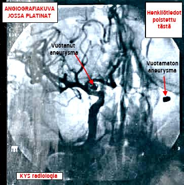

SAV |
SAV - AIVOVERENVUOTO Elämä ei aina kulje sitä rataa, mitä toivoisi. Minun elämääni vaikuttaa aina kaksi aivoverenvuotoa, jotka olen saanut. Ensimmäinen tuli kirjakaupassa vuonna 1993 ja oli hyvin massiivinen, johon olin lähellä menehtyä. Toinen vuoto tuli vuonna 1998 ollessani yksin perhokalassa taimenen tarttuessa perhoon kiinni. Syy toiseen vuotoon oli se, ettei ensimmäisellä kerralla vuotokohtaa löydetty eikä sitä voitu korjata. Nyt valtimopullistuma on korjattu pois verenkierrosta. Viimeisin korjaus tehtiin syksyllä 2011. Perustiedot SAV:sta ja minun tarinani on luettavissa vasemmalla puolella olevista linkeistä. Oikealla puolella oleva kuva on angiografiakuva aivoistani ja siinä näkyy keskellä vuotanut aneurysma ja selkeästi platina, joka pullistumaan on laitettu. Myös toinen pienempään aneurysmaan laitettu platina näkyy kuvan oikeassa reunassa. Vasemmassa kuvassa voin todeta jo toisen kerran, että "elossa jälleen" (kuva on otettu tosin kontrollikäynnillä). |
PÄIVITYS 1.1.2018 -- VUOSIPÄIVITYS
© Jyrki Rossi, 1999-2021 ---MAIL: etunimi.sukunimi@aanekoski.fi
© Jyrki Rossi, 1999-2021 ---MAIL: etunimi.sukunimi@aanekoski.fi